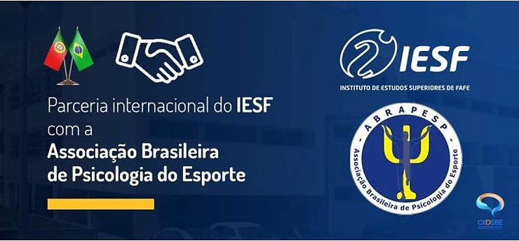

Parceria internacional da ABRAPESP com o Instituto de Estudos Superiores de Fafe (IESF)
A Associação Brasileira de Psicologia do Esporte (ABRAPESP) estabeleceu parceria internacional com o Instituto de Estudos Superiores de Fafe (IESF) em Portugal, visando a implementação de iniciativas conjuntas em pesquisa, na formação e na atualização profissional. Esta parceria inclui, entre outras coisas, as iniciativas do Centro de Investigação e Intervenção em Desporto Educação e Bem Estar (CIIDEBE), polo sediado no IESF.
Para conhecer mais do IESF: www.iesfafe.pt
.